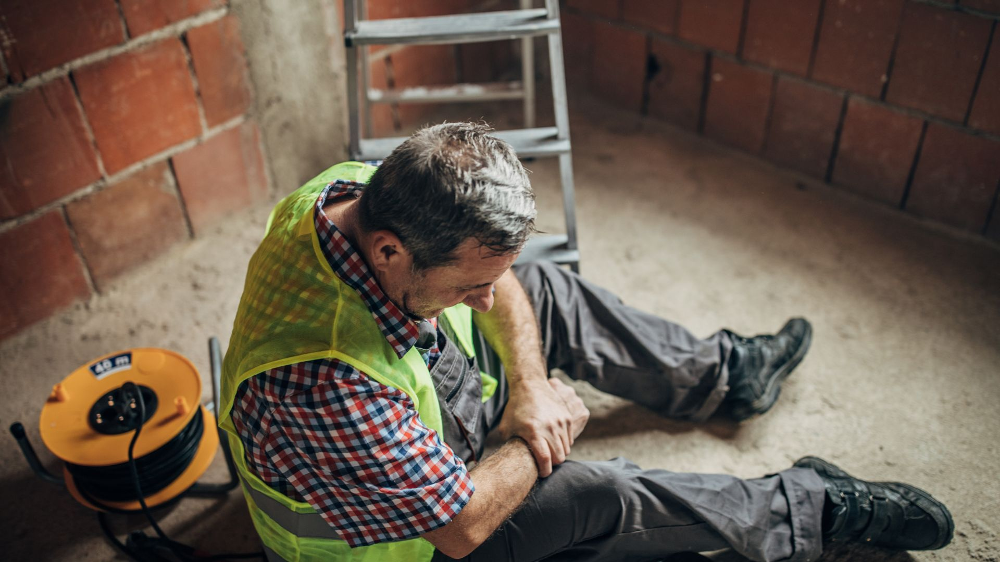

Construction Accidents in Huntsville, AL: Recovering After a Serious Worksite Injury
Construction work helps shape the growth and development of Huntsville, but it also comes with significant risks. From towering commercial projects to residential developments, construction workers face hazards every day that can result in serious injuries when safety measures fail.
If you are searching for information after a construction site injury, understanding your legal rights is an important first step. Many injured workers and their families are left facing medical expenses, lost income, and uncertainty about what comes next after a serious accident.
At The Lackey Law Firm, we have spent decades helping injury victims throughout North Alabama understand their legal options. Whether an accident involves a fall, heavy machinery, electrical hazards, or another dangerous condition, our team is committed to helping injured individuals seek the information and support they need during a difficult time.
If you are looking for a construction accident lawyer, it is important to work with a legal team that understands the complexities of construction injury claims and the challenges workers often face after an accident.
Understanding the Risks Present on Construction Sites
Construction sites are constantly changing environments filled with heavy equipment, elevated work areas, electrical systems, and multiple contractors working simultaneously. Even when safety protocols are in place, accidents can occur because of negligence, equipment failures, inadequate training, or unsafe conditions.
Unlike many workplace injuries, construction accidents frequently result in severe trauma that can affect a person’s ability to work and maintain their quality of life. Some workers require extensive medical treatment, while others may face permanent disabilities that impact their future earning potential.
Because construction projects often involve numerous parties, determining responsibility for an accident can be more complicated than many people realize. This is one reason why speaking with a construction accident attorney after a serious injury may be beneficial.
Common Causes of Construction Accidents on Huntsville Worksites
Construction accidents can occur in many different ways. Understanding the most common causes can help injured workers recognize how negligence or safety failures may have contributed to an incident.
|
Accident Type |
How It Happens |
Common Injuries |
|
Falls from Heights |
Falls from roofs, ladders, scaffolding, or elevated platforms |
Broken bones, traumatic brain injuries, spinal cord injuries |
|
Falling Objects |
Tools, equipment, or materials strike workers below |
Head injuries, neck injuries, fractures |
|
Equipment Accidents |
Malfunctioning or improperly operated machinery |
Crush injuries, amputations, severe lacerations |
|
Electrical Incidents |
Contact with exposed wires or power sources |
Burns, nerve damage, cardiac injuries |
|
Trench Collapses |
Excavation walls cave in on workers |
Crush injuries, suffocation, internal injuries |
|
Workers are struck by trucks or heavy equipment |
Multiple trauma injuries, fractures, fatalities |
While every accident is unique, these incidents frequently result in severe injuries that require significant medical care and lengthy recovery periods.
Falls Continue to Be a Leading Hazard
Falls from ladders, scaffolding, rooftops, and elevated work platforms remain one of the most common causes of serious construction injuries. Missing guardrails, defective equipment, and inadequate fall protection can significantly increase the risk of a devastating accident.
Heavy Equipment Creates Significant Dangers
Construction sites depend on machinery such as cranes, forklifts, excavators, bulldozers, and loaders. When operators are not properly trained or equipment is not adequately maintained, workers may suffer catastrophic injuries.
Electrical Hazards Can Cause Lasting Harm
Electrical injuries often result from exposed wiring, faulty equipment, improper grounding, or accidental contact with power lines. These incidents can lead to severe burns, nerve damage, and other life-altering injuries.
Serious Injuries Commonly Seen in Construction Accident Cases
Construction accidents frequently cause injuries that extend far beyond a simple recovery period.
Some of the most common injuries include:
- Traumatic brain injuries
- Spinal cord injuries
- Back and neck injuries
- Broken bones
- Crush injuries
- Internal organ damage
- Severe burns
- Eye injuries
- Amputations
Soft tissue injuries
These injuries often require extensive treatment, including surgery, rehabilitation, physical therapy, and long-term medical care. In severe cases, injured workers may never return to the same occupation they held before the accident.
Beyond Workers' Compensation: Understanding Additional Legal Options
Many construction workers assume that workers’ compensation benefits are their only source of recovery after an accident. While workers’ compensation may provide important benefits, it does not always fully address the financial impact of a serious injury.
Worker’s compensation is generally a no-fault system that limits an employee’s ability to sue their employer directly, but it does not prevent an injured worker from pursuing a separate claim against a negligent third party, such as a subcontractor or equipment manufacturer.
In some cases, an injured worker may have grounds to pursue a separate personal injury claim against a third party whose negligence contributed to the accident.
Potential third parties may include:
- General contractors
- Subcontractors
- Property owners
- Equipment manufacturers
- Maintenance companies
Material suppliers
A knowledgeable construction accident lawyer can evaluate the circumstances of an accident to determine whether additional claims may be available.
How Third-Party Liability May Affect a Construction Accident Claim
Construction projects often involve numerous companies operating on the same jobsite. As a result, liability may extend beyond an injured worker’s direct employer.
For example, a personal injury claim may arise if:
- A subcontractor creates a dangerous worksite condition
- Defective machinery causes an injury
- A property owner fails to correct known hazards
- Safety regulations are ignored
Defective safety equipment contributes to an accident
These claims often require extensive investigation and evidence gathering. An experienced personal injury attorney can help identify all potentially responsible parties.
Evidence Can Play a Critical Role in a Construction Accident Case
Successful claims often depend on the strength of the available evidence.
Important evidence may include:
- Accident reports
- Jobsite photographs
- Witness statements
- Medical records
- OSHA findings
- Safety inspection reports
- Equipment maintenance records
- Employment documentation
Surveillance footage
Construction sites can change quickly after an accident. Equipment may be moved, hazards may be corrected, and important evidence may disappear. Preserving information early is often essential.

Factors That Can Complicate Construction Accident Claims
Construction accident cases are often more complex than many other personal injury matters.
Multiple Parties May Share Responsibility
Construction sites frequently involve contractors, subcontractors, suppliers, and property owners. Determining who is legally responsible often requires a detailed investigation.
Serious Injuries Increase the Stakes
Severe injuries can result in substantial medical expenses and significant lost income, making these claims particularly important for injured workers and their families.
Alabama’s Contributory Negligence Rule
Alabama follows a contributory negligence standard in many personal injury cases. Alabama is one of only a handful of states that still follows a pure contributory negligence rule, meaning an injured worker found even slightly at fault may be barred from recovering compensation in a third-party claim. Because these rules can affect a claim, it is important to understand how fault determinations may influence a case.
Damages That May Be Available in a Construction Accident Claim
When a third-party personal injury claim is available, injured workers may be able to pursue compensation for losses related to the accident.
|
Type of Damage |
What It May Cover |
|
Medical Expenses |
Emergency treatment, surgery, hospital stays, rehabilitation, future medical care, and related healthcare costs |
|
Lost Income |
Missed wages, reduced earning capacity, lost employment benefits, and other income-related losses |
|
Pain and Suffering |
Physical pain, emotional distress, mental anguish, and reduced quality of life |
|
Permanent Disability |
Long-term physical limitations, loss of function, and future financial impact |
|
Disfigurement |
Scarring, burns, amputations, or other permanent physical changes |
|
Wrongful Death Damages |
Certain damages available under Alabama wrongful death law when a construction accident results in a fatality |
The specific damages available will depend on the facts of each case, the severity of the injuries, and the legal claims that may apply.
Actions to Take Following a Construction Accident
The steps taken after a construction accident can have a significant impact on both your physical recovery and any potential legal claim. Taking the right actions early can help protect your health, preserve important evidence, and ensure that your rights are safeguarded throughout the process.
- Seek Medical Care Immediately
Your health should be the top priority after any construction accident. Prompt medical treatment can help identify injuries that may not be immediately apparent and create important medical records documenting the harm suffered. Following your doctor’s recommendations and attending follow-up appointments can also support your recovery. - Report the Incident
Notify your supervisor, employer, or site manager as soon as possible after the accident occurs. Reporting the incident helps create an official record of what happened and may be necessary for workers’ compensation or other claims. Be sure the report accurately reflects the facts of the accident.
Injured employees typically face strict deadlines for reporting an accident to their employer, and missing these deadlines can jeopardize eligibility for benefits. - Preserve Available Evidence
Evidence can disappear quickly on active construction sites. If you are able, take photographs of the accident scene, equipment involved, visible injuries, and any hazardous conditions. Collect contact information from witnesses and keep copies of any reports, medical records, or correspondence related to the incident. - Avoid Speculating About Fault
Construction accidents often involve multiple contractors, subcontractors, property owners, equipment manufacturers, or other parties. Avoid making statements about who was responsible or accepting blame before all the facts are known. A thorough investigation is often necessary to determine liability. - Speak With an Attorney
An experienced construction accident attorney can review the circumstances of the accident, identify potentially responsible parties, and explain your legal options. Early legal guidance may help preserve evidence, protect your interests, and ensure important deadlines are not missed.
Legal Representation Can Help Level the Playing Field
Construction accident claims often involve insurance companies, contractors, and corporate legal teams working to protect their interests. Injured workers may find it difficult to navigate these challenges without experienced legal guidance.
A personal injury lawyer can assist by:
- Investigating the accident
- Preserving evidence
- Identifying liable parties
- Evaluating damages
- Handling insurance communications
Preparing a case for litigation when necessary
Whether you need an injury lawyer, personal injury lawyer, or construction accident attorney, understanding your legal rights can help you make informed decisions during a difficult time.

Why Huntsville Workers Turn to Local Legal Representation
Huntsville continues to experience rapid growth through commercial, industrial, and residential development projects. As construction activity increases across Madison County and surrounding communities, so does the potential for serious worksite injuries. Local workers often face unique challenges after an accident, from obtaining medical care to navigating insurance issues and understanding Alabama law. For more than four decades, our firm has proudly served individuals and families throughout North Alabama. We understand the impact a serious injury can have on local households, and we remain committed to helping injured workers access the information and support they need during challenging times.
Construction Accident FAQs for Huntsville Workers
After a construction accident, many injured workers have questions about their rights and the legal process. The answers below address some of the concerns we commonly hear.
1. Can I receive workers’ compensation and still pursue a personal injury claim?
In some situations, yes. If a third party contributed to the accident, a separate claim may be available in addition to workers’ compensation benefits.
2. How long do I have to pursue a construction accident claim?
Deadlines vary depending on the circumstances of the case. Speaking with an attorney promptly can help ensure important deadlines are not missed.
3. What if defective equipment caused my injury?
If a defective product or piece of equipment contributed to the accident, a product liability claim may be available against the manufacturer or another responsible party.
4. Should I provide a statement to an insurance company?
Before providing detailed statements, it is often beneficial to understand your legal rights and how your statements could affect a potential claim.
5. What does a construction accident lawyer investigate?
An attorney may review accident reports, medical records, witness statements, contracts, safety documentation, and other evidence to determine liability.
6. Do all construction accident cases go to court?
No. Many cases resolve through negotiations, while others may require litigation if a resolution cannot be reached.
Construction Accident Recovery Essentials
Recovering after a serious construction accident can be overwhelming, but understanding your rights can help you move forward with greater confidence.
✓ Construction sites contain hazards that can cause severe and life-changing injuries.
✓ Workers’ compensation may not be the only source of financial recovery.
✓ Third-party claimsmay be available when another party’s negligence contributed to an accident.
✓ Strong evidence often plays a critical role in successful claims.
✓ Early legal guidance can help protect important rights and preserve valuable evidence.
A serious worksite injury can affect every aspect of your life, from your physical health to your financial stability. If you or a loved one has been injured in a construction accident in Huntsville or elsewhere in North Alabama, contact our team to learn more about your legal options and discuss the circumstances of your case.